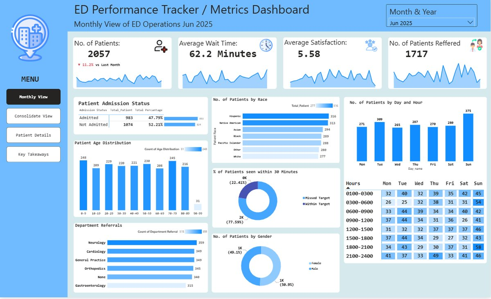
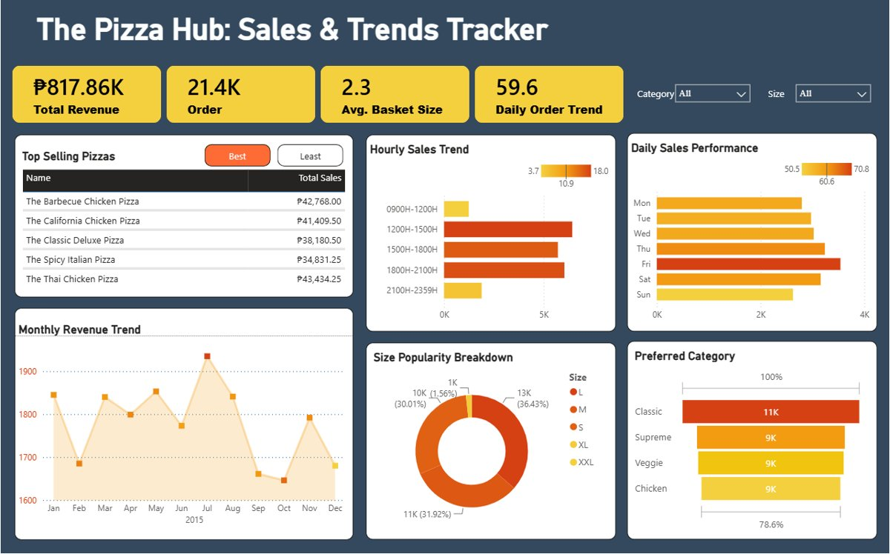
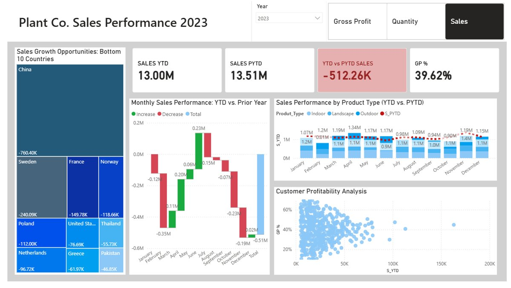
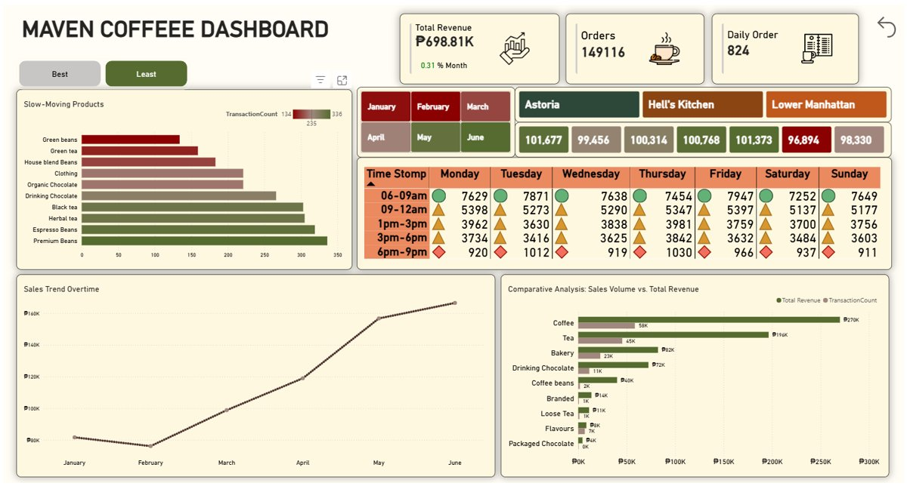
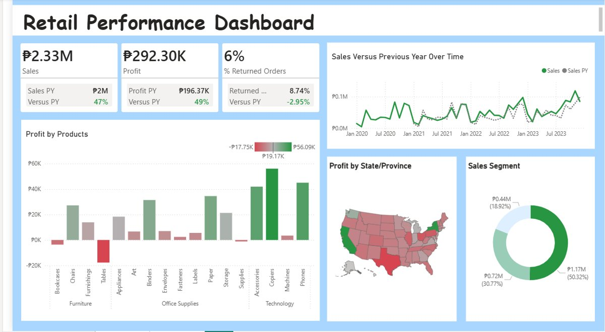

Projects
Data dashboards, reports, and systems I've actually built.
Everything here comes from real work — open a card to see the tools and details behind it.

ED Performance Tracker
Power BI dashboard with ETL pipeline automation monitoring ER operations — cut manual data prep time by 100% and surfaced a 62.2-min average wait time with a 47.79% admission rate.
View on GitHub
The Pizza Hub: Sales & Trends Tracker
Sales dashboard monitoring transaction data and product performance — classic pizza variants drove most revenue, peaking in July.
View on GitHub
Plant_DTS: Global Sales & Profitability
Regional sales and expense tracker with DAX time-intelligence functions — flagged China as the lowest-performing region at -760.40k.
View on GitHub
Maven Coffee Operational Analysis
Heat-map and time-series analysis of transactional patterns — revealed 0.31% monthly revenue growth and a morning peak in demand.
View on GitHub
Retail Chain Operational Insights
Retail performance dashboard analyzing sales and profitability across products, time, and locations — YoY comparisons and DAX-driven regional profitability insights.
View on GitHub